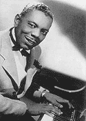
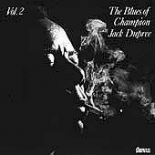

- ATB's Who's Who -
- ATB's Who's Who -
Уроженец Нового Орлеана, в раннем возрасте остался сиротой. Его родители погибли в пожаре, устроенном куклукскланом, и воспитывался в том же сиротском доме, где научился играть на корнете Луи Армстронг (Louis Armstrong). Выступал на улицах Нового Орлеана, пока не получил работу тапера, танцора и конферансье в знаменитых заведениях Французского квартала. Бродяжничал. Был бутлегером. В качестве профессионального боксера провел 107 боев и был чемпионом штата Индианапола в легком весе, откуда его прозвище. Первые записи сделал в 1940 в Чикаго. В годы Второй мировой войны был призван в ВМС США. Попал в плен и два года провел в японском концентрационном лагере. По окончанию войны поселился в Нью-Йорке, но выступал и записывал пластинки в самых разных городах Америки.  В конце 40-х выступал и записывался с Санни Терри (Sonny Terry) и Брауни МакГи (Brownie McGhee). Временами вынужден был подрабатывать как повар, не смотря на то, что многие его пластинки пользовались популярностью. Например, один из самых знаменитых его блюзов "Walking The Blues" в 1955 занимал 6 позицию в ритмэндблюзовых чартах журнала "Биллбоард". В 1959 одним из первых блюзмэнов в послевоенный период гастролировал в Европе. Отсутствие расистского отношения у публики и жульничества со стороны продюссеров Старого Света оказалось настолько большим контрастом по сравнению с ситуацией на родине, что Чампион Джэк Дюпри принимает решение эмигрировать в Швейцарию. Он активно гастролирует по Европе, записывает множество альбомов для небольших фирм, созданных европейскими энтузиастами блюза. Сотрудничал как с английским джазовым оркестром традиционного направления под руководством Криса Барбера (Chris Barber), так и с представителями революционного на тот момент направления блюз-рока - группой "Блюзбрейкерз" (Bluesbreakers) Джона Мэйэлла (John Mayall). Возможность стабильной работы позволяет Чэмпион Джеку Дюпри жить в относительном финансовом благополучии. В последнее десятилетие жизни он занялся живописью, одно из его полотен было продано за 7000$.В 1990, разменяв девятый десяток лет, Чампион Джек Дюпри вновь посетил родной город, чтобы принять участие в Новоорлеанском фестивале джазовой и традиционной музыки (New Orleans Jazz & Herritage Festival). В 1990 и 1991 году записал для независимой блюзовой фирмы Bullseye два альбома, демонстрирующих великолепную музыкальную форму. Блюзмэн до мозга кости, Чампион Джек Дюпри продолжал играть блюз до последнего года жизни.
ВЭБ™'99
Дискография: Сборники ранних записей:альбомы:В сети: |